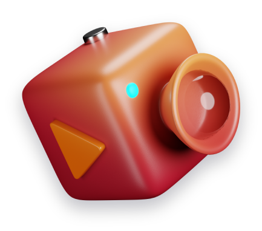

Proposal · TAMU-RFP-27-5142 · Marketing and Communications Services
Make good visible.
Website, social media, newsletters and student engagement for Citizens for Good, run every week by a team that also builds the tools behind them.

01 · What we heard
A university-wide promise that students should feel every week.
4 pillars
character, knowledge, skills and service
Fall 2024
initiative introduced by President Mark Welsh
Badge
a Citizen for Good credential students can earn
Dec 2
proposals due, December 2, 2026
What you asked for
Marketing and communications support for Citizens for Good: maintain and grow the website, run the social media channels, produce newsletters and drive student engagement.
What success looks like
More Aggies know the program, join a project and earn the badge, and the team sees every week which posts, emails and pages moved students to act.
Sources: TAMU-RFP-27-5142 (Texas A&M procurement, posted 9 Nov 2026); tamu.edu, Building Citizens for Good; Texas A&M Today, Citizenship and Service Initiative (Feb 2025).

02 · What the RFP really asks
Four channels, one rhythm.
1
Website
The home of the program: current, fast, accessible and easy for staff to update.
Weekly updates2
Social media
Short video and stories that show real students serving, not just announcements.
Reels-first calendar3
Newsletters
A regular email students actually open: what's on, who served, what's next.
Every other week4
Student engagement
Every channel ends in one action: sign up, attend, or earn the badge.
Measured by sign-upsWe will confirm together in discovery: current channels and accounts · brand and approval process · event calendar and priority audiences
03 · Our solution
The Citizens for Good studio: plan, make, publish, measure.
Plan
A semester calendar built around the pillars and the academic year.

Make
Reels, stories, posts and emails in the university's voice.

Publish
Website updates, social posting and newsletter sends.

Measure
Sign-ups and badge progress, reported monthly.
Texas A&M brand standards WCAG 2.1 AA web content Student voices, with consent One weekly rhythm
04 · Preliminary concept
One action, on every channel.
tamu.edu · citizens for good
CITIZENS FOR GOOD
Find your way to serve this week.
Events, service projects and the badge you can earn, in one place.
CharacterLead with integrity
KnowledgeKnow how it works
SkillsDialogue and action
ServiceShow up for others
Earn your Citizen for Good badge · 3 steps leftStart
@citizensforgood
3 projects this weekend. Sign up in 1 minute. Link in bio.
Sign up
NEWSLETTER · EVERY OTHER WEEK
This week, 340 Aggies served.
Upcoming eventsStudent storyBadge progress
Preliminary concept prepared for this proposal, not an official Texas A&M design. Final work follows the university's brand standards; names and figures are illustrative.
05 · Brand presence
Every client gets a brand world, not just a logo.
Presence, not just a logo
We design every touchpoint a brand needs. For Citizens for Good, that standard shapes the social templates, the newsletter and every event graphic, all within the university's brand.
Logo system Palette and type Signage Apparel and merch Packaging Social templates
Concept brands created by TWO&HUMAN to show our art direction and standard of execution. Fictional brands, not client projects.

06 · Scope and deliverables
Everything the program needs, every month.
Website
Content updates, new pages, events and stories; accessibility checks on every update.
WeeklySocial media
Calendar, reels, stories and posts; community replies during business hours.
WeeklyNewsletters
Design, writing and sending, with open and click reports.
Every other weekStudent engagement
Campaigns around sign-ups, events and the badge; student story features.
Each semesterTemplates
Editable templates staff can use for quick posts and flyers.
Month 1Reporting
Monthly report on reach, sign-ups and badge progress.
MonthlyAssumptions that protect your budget: university accounts and tools stay in Texas A&M's name · paid advertising, if any, billed at cost · two revision rounds per item · content approved by the program team before publishing.
07 · Timeline and success measures
Running in 30 days, measured every month.
Weeks 1–2
Onboard
- Access, brand and approvals
- Channel and website audit
- Spring semester calendar
Weeks 3–4
Launch
- First campaign live
- Newsletter template
- Templates for staff
Month 2 on
Run
- Weekly publishing
- Newsletter every other week
- Monthly report
Each semester
Grow
- Badge campaign
- Student stories
- Semester review
Start date follows award. All publishing goes through the program's approval step; Central Time is 3 hours behind us, so we cover the full morning.
Event and project sign-ups Badge starts and completions Newsletter opens and clicks Website visits to sign-up pages
08 · Team and the questions you should ask
Founder-led, and ready for hard questions.
Julio Briones
Co-founder · Strategy and content lead
Single point of contact. Plans the calendar and writes the content; coordinates deliverables, revisions and QA for international marketing clients.
Mariam Neme
Co-founder · Software engineer
Leads the website, accessibility, newsletter setup and the tracking that ties each post to sign-ups.
Established 2026 · Tucumán, Argentina · remote, in English and Spanish · founder-led: the people in this proposal do the work.
Can a remote team capture student life?
Students and staff send photos and clips through a simple shared form; we turn them into reels and stories, always with consent.
Who approves what goes out?
The program team. Nothing is published without approval, and urgent posts have a same-day path.
Who owns the accounts and content?
Texas A&M. Every account, file and asset stays in the university's name.
Contracts, insurance and payments?
Invoices in U.S. dollars, IRS Form W-8BEN-E as a foreign vendor, and certificates of insurance as required.

09 · Investment (USD)
One setup, three monthly levels.
Essential
$1,450 /month
+ $2,400 one-time setup
- Website updates
- 12 social posts a month
- 1 newsletter a month
- Monthly report
Recommended
Citizens for Good studio
$2,450 /month
+ $2,400 one-time setup
- Weekly website updates
- 20 posts a month, reels first
- 2 newsletters a month
- Semester engagement campaign
- Monthly report
Full program
$3,600 /month
+ $2,400 one-time setup
- Everything in the studio
- Student story video series
- Event promotion kits
- Quarterly strategy review

30-day guarantee. If the calendar, the templates and the first campaign are not live within 30 days of kickoff, the second month is free.
Setup: audit, calendar, templates and newsletter design. Year-1 cost, recommended option: $31,800. Monthly fees invoiced in arrears · extra work $60 per hour, quoted in writing · prices valid 90 days · also entered in the university's pricing form.


10 · Compliance and next steps
Ready to make good visible.
Website maintenance and growthYes
Social media channelsYes
NewslettersYes
Student engagementYes
ReportingMonthly
AccessibilityWCAG 2.1 AA
Required formsIncluded
InsuranceAs required
1 · Submission
By December 2, 2026.
2 · Interview
A video walk-through of the plan.
3 · Kickoff
First campaign live in 30 days.
Julio Briones · julio@twoandhuman.com · +54 381 509 8972 · twoandhuman.com